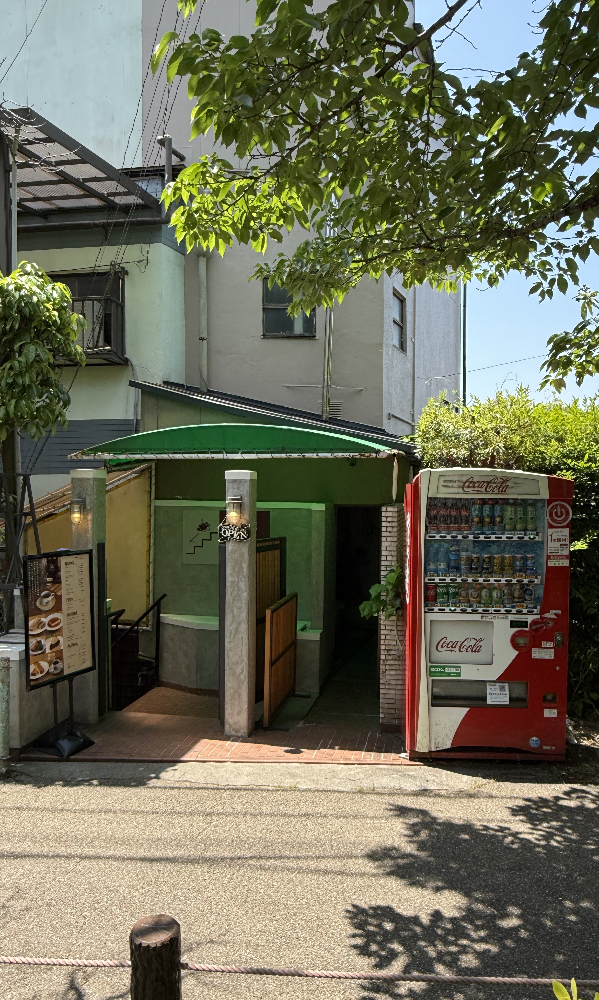
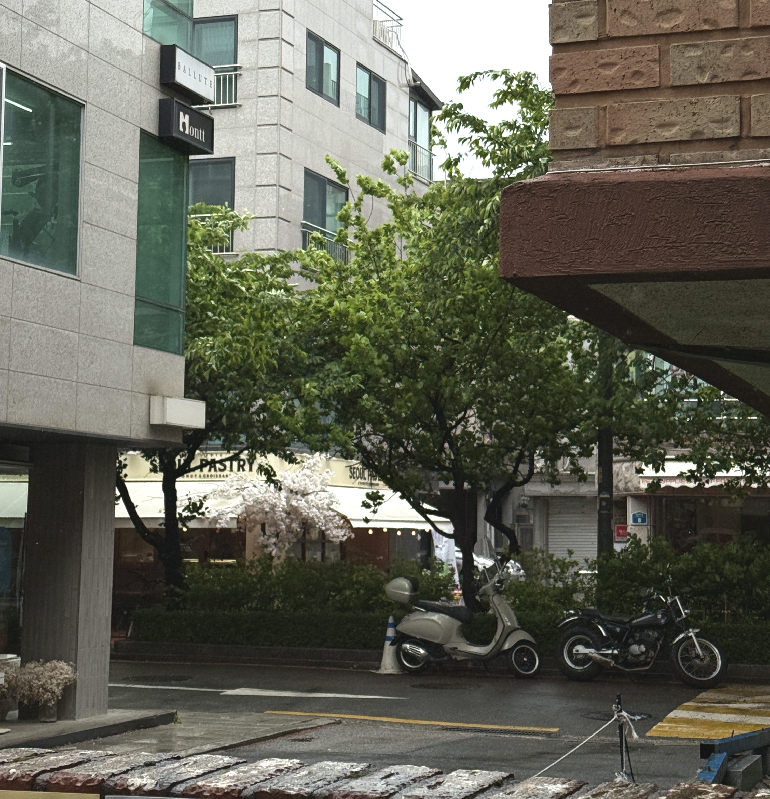
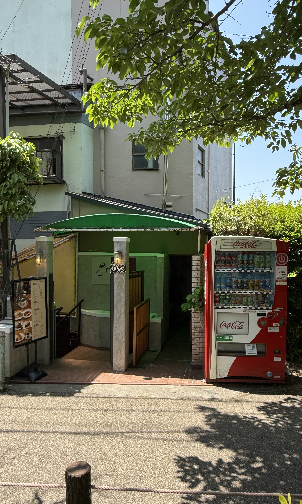
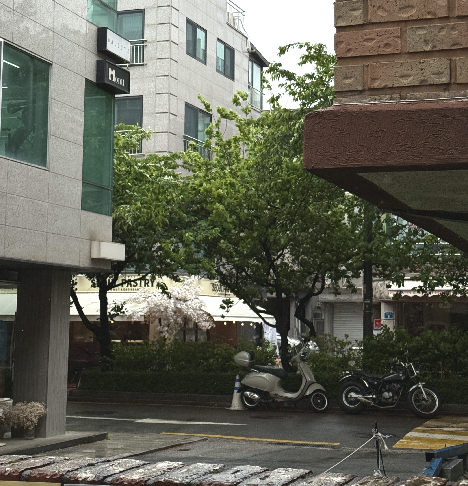

My background in Cognitive Science sparked a deep curiosity in the intricacies of human interaction and behavior. I'm not just interested in what people do, but the fundamental why behind their actions. Now, I'm channeling that curiosity into Data Science, using analytical tools to find concrete answers and improve how people experience technology.
My goal is to bridge the gap between human-centered insights and data-driven decisions. To achieve this, I am continuously building my analytical toolkit. I draw on my foundation in cognitive science and human-subjects research design to structure problems logically, while my practical experience with tools like Python, SQL, and various database systems allows me to analyze data and uncover the story it tells.
Outside of academics, my love for finding patterns extends to learning languages. As a fluent bilingual in English and Korean, I'm now tackling the structures and nuances of Japanese. I also enjoy preserving the stories of my travels through photography, focusing on capturing the small details that make a moment memorable.
Below are some of the moments I've captured over time:
 



Feel free to view my works, or get in touch by contacting me or connecting on LinkedIn.